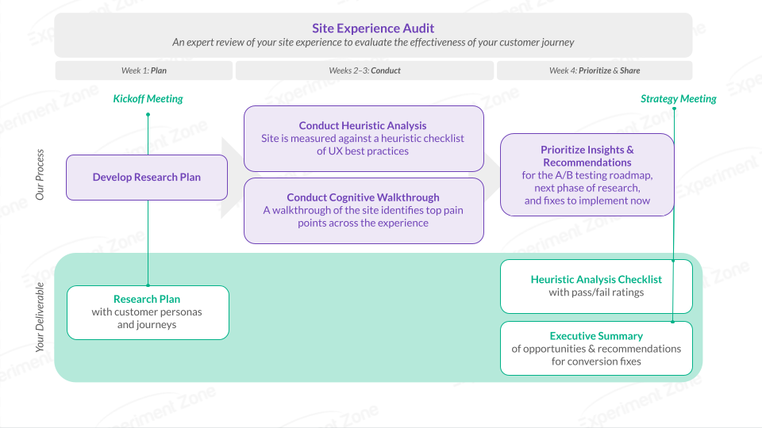

Our Simple and Seamless Process
In less than 4 weeks, we'll provide an expert review of your
end-to-end customer journey.

Part 1 | Heuristic Analysis
We will review key pages across the browsing and purchasing funnel
against a UX checklist.
Examples of some of the heuristics used include:
- Users are able to undo and redo their actions
-
Users have consistency between words, behaviors, or actions
- Users can leave unwanted states ('undo')
- Calls to Action are action-oriented
- Search always returns results
The full list of heuristics used in our analysis will be presented
alongside the results in the checklist.
Part 2 | Cognitive Walkthrough
Identify the top issues in the way of conversion.
We'll identify the core customer personas and their journey
through your website. You’ll uncover the top pain points across
the journey - and our recommendations for how to resolve them in
the short and long term.
As we gather insights, we will prioritize these based on the level
of effort and expected impact.
Deliverables
Research plan & meeting
Executive summary of opportunities & conversion fixes
Detailed UX Audit Checklist with pass/fail
Read-out Meeting